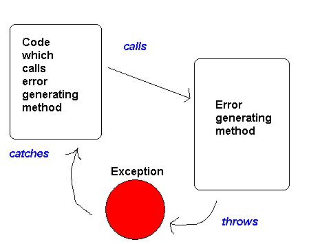
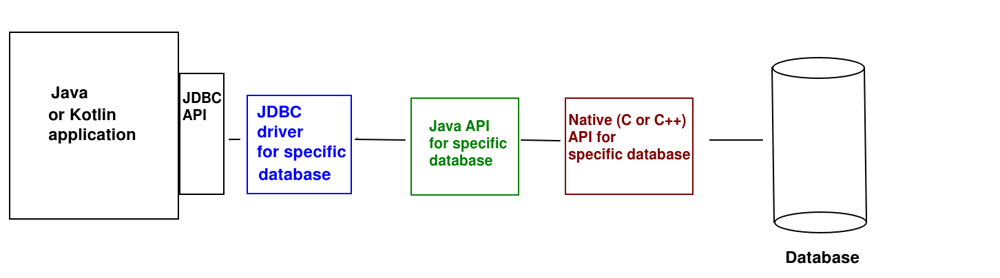
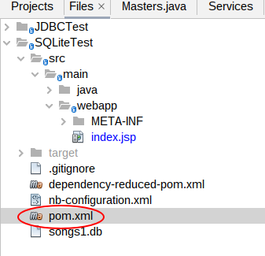

Today we will look at connecting to a database using JDBC. However before we do so, we need to take a look at error handling with exceptions.
We will start today with a quick introduction to error-handling with exceptions. We will not cover exceptions in full, just enough to use them with JDBC. However I have provided more complete notes here for you to read in your own time.
Note that some of the exceptions notes are based on the originals by John Flackett, but reworded

// Note that MyNetworkConnection is not part of the Java library - it's a custom class built by ourselves
MyNetworkConnection networkConnection = new MyNetworkConnection();
try
{
Response response = networkConnection.fetchResponse("https://nwcourses.github.io/COM528/");
System.out.println("Response from server: " + response.toString());
}
catch (IOException e)
{
System.out.println ("An error occurred: " + e);
}
networkConnection.fetchResponse() method) and catch any exceptions generated in the catch blocknetworkConnection.fetchResponse()) in the try block will not run if an exception occurred
IOException is part of the standard libraryIOException (i.e. input/output exception) -
some sort of error occurred when we try to write to or read from
a file, or connect across a network. This could include, for example, the hard
drive or USB stick that we are writing to being corrupted or fullFileNotFoundException - a subclass of IOException, which is thrown
if we try to access a non-existent fileArithmeticException - an illegal mathematical operation, such
as a division by zero, is performedArrayIndexOutOfBoundsException - when we try to look up a member
of an array outside the array boundsNumberFormatException - if we convert a non-number (e.g. a word)
into a number using Integer.parseInt()NullPointerException - we try to do something with a
null object, e.g.
Person p = null; // SHOULD BE Person p = new Person(); !
p.setName ("John");
RuntimeException we do not have to catch them
NullPointerException by checking none of your objects are null!JDBC stands for Java Database Connectivity and provides a common standard for connecting to any supported database, such as Oracle, MySQL, PostgreSQL and so on. The great advantage of JDBC over the "native" methods for connecting to each database is that the same code (the JDBC API) can be used to connect to different databases. The only thing you need to change is the driver and connection.
JDBC connects to a range of different databases using drivers. Each database has its own driver, and the driver provides the interface between JDBC and the native database. In other words, the driver translates the common interface that JDBC provides into the specific implementation details needed for each type of database. So there is a MySQL driver, an Oracle driver, and so on.
The diagram below shows a typical architecture of a JDBC application, showing the different components and how they interact. Note that not all databases include all layers.

As can be seen, the JDBC API of your application (common to all databases) communicates with the driver. The driver would then typically communicate with a Java API for your specific database (e.g. SQLite) which then may use a native (C or C++) API for that database to actually communicate with the database itself - as most native database APIs are written in C or C++.
SQLite (see sqlite.org)
is a simple on-board client-side database which does not require a full
database management system setup (like MySQL or Oracle) and its attendant client-server architecture. SQLite databases can be easily embedded into any Java application, whether that be a web application, a console application, a desktop GUI Java application or an Android app. SQLite databases are stored as simple files, with a .db extension. You can download SQLite here. You can query and manipulate an SQLite database via the console-based sqlite3 tool, documented here and downloadable here along with the SQLite libraries. You can also upload a .db database to the online "fiddle" tool here and enter SQL statements to query and manipulate the database.
To use JDBC with any database you need to handle possible exceptions representing various type of SQL error (e.g. cannot connect to the database, SQL syntax errors). An SQLException will be thrown in all these cases. Therefore, all your database code must be placed within a try block, with a catch block to handle errors, e.g.:
Connection connection = null;
try
{
// Connect to the database (see below)
// Send your SQL queries (see below)
}
catch(SQLException sqlException)
{
out.println("Error: " + sqlException);
}
finally
{
try
{
if(connection != null)
{
connection.close();
}
}
catch (SQLException closeException)
{
out.println("Close error: " + closeException);
}
}
Note the try and catch is followed by a third type of block, a finally block, in which we close the database connection, whether or not there was an exception. More generally, the role of finally blocks is to run code whether or not an exception occurred. Note that closing the connection might itself generate an exception so the finally block must include its own try/catch.
First of all, use the driver to make the connection to the SQLite database:
Class.forName("org.sqlite.JDBC");
Connection conn = DriverManager.getConnection("jdbc:sqlite:venue.db");
The first statement (Class.forName("org.sqlite.JDBC"); ensures the driver is loaded by referencing one of the classes within it (org.sqlite.JDBC). Without this statement, the driver may not be loaded.
Then we obtain a connection to a database, using the JDBC API. All supported databases would use
DriverManager.getConnection()as it's a standard JDBC call, however the connection details (the connection string) would be different. Note that here, the connection string is:
jdbc:sqlite:venue.dbThe
jdbc: denotes the protocol, which confirms we are using JDBC. The next part of the string is the specific database we are using: sqlite here. The final part of the string is the .db file storing the database. This will be loaded from the CATALINA_BASE directory bydefault, unless a full path is specified. Also, the .db file will be created if it doesn't already exist.
To use JDBC to send SQL queries to the database, we need to create Statement objects. Statement objects can be used to execute queries of various kinds. Here is an example of using a Statement to create a table using SQLite (note that the SQL used is specifically SQLite SQL, which is slightly different to other types of SQL):
Statement stmt = conn.createStatement();
stmt.executeUpdate("create table if not exists event (id integer primary key autoincrement, band string, eventdate string, eventtime string, availability integer)");
We use the Connection object to create the Statement. Statement has an executeUpdate() method to perform any query which will update the database in some way, e.g. create a table, or insert, update or delete a record. Here, we are creating a table with a primary key (id), three string columns (band, eventdate and eventtime) and an integer column (availability).
CRUD (Create, Retrieve, Update, Delete) describes the standard data operations of creating data, looking up data, updating data and deleting data (in SQL, INSERT, SELECT, UPDATE and DELETE respectively). Here is how we perform CRUD operations with JDBC and SQLite.
Here is an example of some code to perform a SELECT statement.
String firstname = "John";
PreparedStatement pStmt = conn.prepareStatement("select * from venue where band=?");
pStmt.setString(1, request.getParameter("band"));
ResultSet rs = pStmt.executeQuery();
while(rs.next())
{
out.println("Date: " + rs.getString("eventdate") + " Time: " + rs.getString("eventtime") + " Availability: " + rs.getString("availability") + "<br />");
}
PreparedStatement (rather than just a plain Statement). A prepared statement is a statement which has parameters bound to it, and then is compiled into a binary form which can be stored in memory and rapidly executed by the database. The advantage of a prepared statement is that once compiled, it can be rapidly executed again and again by the database if our application performs the same query multiple times. Prepared statements also prevent a certain type of security exploit known as SQL injection, in which a database can be compromised by the user entering fragments of SQL into a form which combine with existing SQL code in the JSP. We will look at SQL injection in more detail next term in COM518 (Web Application Development).? We bind data to each placeholder using setString(), which takes, as arguments, the placeholder number (beginning with 1) and the data we want to bind. So here:
pStmt.setString(1, request.getParameter("band"));
will bind the band read in from the HTML form (this example is JSP) to the first placeholder. The result will be that we query the database for all events performed by that band.ResultSet rs = pStmt.executeQuery();This returns back a
ResultSet: a collection of all the matching rows from the table.ResultSet by repeatedly calling next() on it. This retrieves the current row within the result set and moves onto the next row. When there are no more rows to retrieve, next() will return false, so the loop will stop.ResultSet's getString() method. This takes the column name as an argument, e.g rs.getString("date") to retrieve the value in the date column.out.println(). I haven't introduced this before, though it is used in the Week 5 solution.Here is another version where we are searching on both band and date:
PreparedStatement pStmt = conn.prepareStatement("select * from venue where band=? and eventdate=?");
pStmt.setString(1, request.getParameter("band"));
pStmt.setString(2, request.getParameter("date"));
ResultSet rs = pStmt.executeQuery();
while(rs.next())
{
out.println("Date: " + rs.getString("eventdate") + " Time: " + rs.getString("eventtime") + " Availability: " + rs.getString("availability") + "<br />");
}
INSERT statements are fairly straightforward, here is some sample code:
PreparedStatement pStmt = conn.prepareStatement ("insert into venue(band,eventdate,eventtime,availability) values (?, ?, ?, ?)");
pStmt.setString (1, request.getParameter("band"));
pStmt.setString (2, request.getParameter("date"));
pStmt.setString (3, request.getParameter("time"));
pStmt.setInt (4, Integer.parseInt(request.getParameter("availability")));
int rowsAdded = pStmt.executeUpdate();
if(rowsAdded == 1)
{
out.println("Successfully added");
}
else
{
out.println("Could not add");
}
Note how it is very similar to the SELECT example, except we are now using an INSERT query and we use executeUpdate() to execute the prepared statement (we must do this for any prepared statement which changes the database in some way). We also use the return value of executeUpdate() to check how many rows were actually added, which should be 1.
UPDATE statements are fairly straightforward, here is some sample code:
PreparedStatement pStmt = conn.prepareStatement ("update people set email=? where id=?");
pStmt.setString (1, request.getParameter("email"));
pStmt.setString (2, request.getParameter("id"));
int affectedRows = pStmt.executeUpdate();
if(affectedRows == 1)
{
out.println("Successfully updated");
}
else
{
out.println("Could not update");
}
This is very similar to the INSERT example. The
executeUpdate() returns the number of affected rows; we check this is 1.
DELETE statements are identical to UPDATE in logic:
PreparedStatement pStmt = conn.prepareStatement ("delete from course where name=?");
pStmt.setString (1, request.getParameter("course"));
int affectedRows = pStmt.executeUpdate();
if(affectedRows == 1)
{
out.println("Successfully deleted");
}
else
{
out.println("Could not delete");
}
Student object (from the Student class you have already written) representing a record
in a students tablefindStudentById() or
findStudentsByName() (for a students table). The methods of the DAO would either return data entities or take them as parameters.
class EventDao
{
private Connection conn;
private String table;
public EventDao(Connection conn, String table)
{
this.conn = conn;
this.table = table;
}
// find an event with a given ID
public Event findEventById(long id) throws SQLException
{
PreparedStatement pStmt = conn.prepareStatement("select * from " + table + " where id=?");
pStmt.setLong(1, id);
ResultSet rs = pStmt.executeQuery();
// Is there a row? If so, next() will return true
if(rs.next())
{
// Create an Event object with the result
return new Event(
rs.getString("band"),
rs.getString("eventdate"),
rs.getString("eventtime"),
rs.getInt("availability")
);
}
// return null if there were no matching rows
return null;
}
// find all events featuring a given band
// returns the events as an ArrayList
public ArrayList<Event> findEventsByBand(String band) throws SQLException
{
ArrayList<Event> events = new ArrayList<>();
PreparedStatement pStmt = conn.prepareStatement("select * from " + table + " where band=?");
pStmt.setString(1, band);
ResultSet rs = pStmt.executeQuery();
// Loop through the results
while(rs.next())
{
// Create an Event object with each result and add it to the
// ArrayList
Event event = new Event(
rs.getString("band"),
rs.getString("eventdate"),
rs.getString("eventtime"),
rs.getInt("availability")
);
events.add(event);
}
return events;
}
// add a new event - takes an Event object (which will contain a name,
// a course, but NOT yet an ID) as a parameter and fills
// in the ID attribute of the Event object with the ID allocated by
// the database. Also returns the allocated ID.
public long addEvent(Event event) throws SQLException
{
PreparedStatement pStmt = conn.prepareStatement ("insert into " + table + "(band,eventdate,eventtime,availability) values (?, ?, ?, ?)");
pStmt.setString (1, event.getBand());
pStmt.setString (2, event.getDate());
pStmt.setString (3, event.getTime());
pStmt.setInt (4, event.getAvailability());
int rowsAdded = pStmt.executeUpdate();
long allocatedId = 0L;
// Was a row added successfully?
if(rowsAdded == 1)
{
// If so, get the keys added
ResultSet rs = pStmt.getGeneratedKeys();
// next() should return true, but check just in case
if(rs.next())
{
// get the allocated primary key
allocatedId = rs.getLong(1);
}
}
// Add the allocated ID to the event object and return the ID
event.setId(allocatedId);
return allocatedId;
}
// update an event - takes an Event object as a parameter and updates
// the record in the table with the ID of that event object passed in
public int updateEvent(Event event) throws SQLException
{
PreparedStatement pStmt = conn.prepareStatement ("update " + table + " set date=?,time=?,availability=? where id=?");
pStmt.setString (1, event.getDate());
pStmt.setString (2, event.getTime());
pStmt.setInt (3, event.getAvailability());
pStmt.setLong (4, event.getId());
return pStmt.executeUpdate();
}
// delete an event - takes an Event object as a parameter
// and deletes the record with the ID of the event object passed in
public int deleteEvent(Event event) throws SQLException
{
PreparedStatement pStmt = conn.prepareStatement ("delete from " + table + " where id=?");
pStmt.setLong (1, event.getId());
return pStmt.executeUpdate();
}
// other methods would be present, only a sample is shown...
}
findEventById() method to find an event using its ID, rather than via a direct SQL INSERT statement. This also means the rest of your code, outside the DAO, is pure Java, rather than a mixture of Java and SQL.updateEvent() method will update the details of
the event with the ID specified in the event object, to the details
contained within the event objectthrows SQLException. All these methods might throw an exception because all contain SQL statements. However, rather than handling the exceptions here, we re-throw them to whatever code might be calling the DAO. This allows for custom error handling depending on what UI we are using: the idea is that the UI will contain the try/catch statement and handle the exceptions in an appropriate way by displaying a message to the user with that UI.
A typical design would include a "manager" class (such as the LiveMusicVenue in this example) containing multiple DAOs. For example:
public class LiveMusicVenue
{
private Connection conn;
private EventDao eventDao;
private CustomerDao customerDao;
public LiveMusicVenue() throws SQLException
{
conn = DriverManager.getConnection("jdbc:sqlite:venue.db");
eventDao = new EventDao(conn, "event");
customerDao = new CustomerDao(conn, "customer");
}
public ArrayList<Event> findEventsByBand(String band) throws SQLException
{
return eventDao.findEventsByBand(band);
}
public boolean bookEvent(long eventId, long customerId, int nPeople) throws SQLException
{
Event event = eventDao.findEventById(eventId);
Customer customer = customerDao.findCustomerById(customerId);
if(event.getAvailability() >= nPeople)
{
Booking booking = new Booking(event, nPeople);
event.reduceAvailability(nPeople);
eventDao.updateEvent(event);
customer.addBooking(booking);
return true;
}
return false;
}
// ... etc ...
}
Note how the LiveMusicVenue contains multiple DAOs and provides methods which allow the outside world to communicate with the DAOs (e.g. findEventsByBand(), shown here).
Note also the bookEvent() method, which takes an event ID and customer ID as parameters. This shows how one event can communicate with multiple DAOs. We use the DAOs to find the event and customer with those IDs, and then, if the event has free space, we create a booking for the event, reduce the availability in the event object, pass the event object to the DAO via the updateEvent() method (so that the availability in the database updates), and add the booking to the customer. The latter operation would not change the database but just store a booking locally within the customer object, as it is not a long-term operation and therefore does not need database storage.
You will need to modify the pom.xml file (Maven build file) to include the Xerial SQLite JDBC driver (see here) in your project. Create a new Web project in NetBeans. Open your pom.xml (see below):

Delete the <dependencies> and <build> sections completely, and replace them with the code below:
<dependencies>
<dependency>
<groupId>javax</groupId>
<artifactId>javaee-web-api</artifactId>
<version>7.0</version>
<scope>provided</scope>
</dependency>
<!-- from sqlite -->
<dependency>
<groupId>org.xerial</groupId>
<artifactId>sqlite-jdbc</artifactId>
<version>3.39.2.0</version>
<!-- <scope>provided</scope>-->
</dependency>
</dependencies>
<build>
<plugins>
<plugin>
<groupId>org.apache.maven.plugins</groupId>
<artifactId>maven-compiler-plugin</artifactId>
<version>3.1</version>
<configuration>
<source>1.7</source>
<target>1.7</target>
<compilerArguments>
<endorseddirs>${endorsed.dir}</endorseddirs>
</compilerArguments>
</configuration>
</plugin>
<plugin>
<groupId>org.apache.maven.plugins</groupId>
<artifactId>maven-war-plugin</artifactId>
<version>2.3</version>
<configuration>
<failOnMissingWebXml>false</failOnMissingWebXml>
</configuration>
</plugin>
<plugin>
<groupId>org.apache.maven.plugins</groupId>
<artifactId>maven-dependency-plugin</artifactId>
<version>2.6</version>
<executions>
<execution>
<phase>validate</phase>
<goals>
<goal>copy</goal>
</goals>
<configuration>
<outputDirectory>${endorsed.dir}</outputDirectory>
<silent>true</silent>
<artifactItems>
<artifactItem>
<groupId>javax</groupId>
<artifactId>javaee-endorsed-api</artifactId>
<version>7.0</version>
<type>jar</type>
</artifactItem>
</artifactItems>
</configuration>
</execution>
</executions>
</plugin>
<!-- from sqlite-->
<plugin>
<groupId>org.apache.maven.plugins</groupId>
<artifactId>maven-shade-plugin</artifactId>
<version>3.3.0</version>
<executions>
<execution>
<goals>
<goal>shade</goal>
</goals>
<configuration>
<transformers>
<transformer
implementation="org.apache.maven.plugins.shade.resource.AppendingTransformer">
<resource>META-INF/services/java.sql.Driver</resource>
</transformer>
</transformers>
</configuration>
</execution>
</executions>
</plugin>
</plugins>
</build>
Now you can start developing the project:
java.sql package, e.g. java.sql.Connection or java.sql.SQLException.index.html from week 6 to it (this contains a form allowing the user to add a student), and also add this additional form, allowing the user to search for a student by name:
<form method="get" action="search.jsp"> Student name: <input name="studentName" /> <input type="submit" value="Go!" /> </form>
addStudent.jsp. In this JSP, add code to connect to the database. Begin with the try/catch/finally structure shown above and then add the connection code. Use the filename students.db for your SQLite database. This file will be created if it doesn't exist already.INSERT statement to add a new student record to a student table in the database. You'll need to create the table if it doesn't already exist. Test the number of affected rows returned, to confirm to the user whether the insertion was successful or not.search.jsp. This should read in the student name from the second form on the index page, and use it to search for all students with that name. Display all matching students.StudentDao by following the DAO example above. It should include methods to add a student and search for a student by name. Modify your JSPs so that they create a StudentDao object and use it to perform the insertion and search operations.StudentDao you wrote above. You will need to modify the StudentDao and the University in this way:
findStudentById() and findStudentsByName() methods in the DAO. These should query the database appropriately and return a single Student, and an ArrayList of matching Students, respectively.University should contain a StudentDao within it, but it will no longer need an ArrayList of students.University so that they call the appropriate methods in the StudentDao.